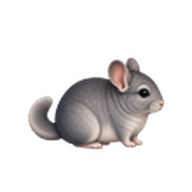
Animals Desktop
41種類の小動物が、Windowsのタスクバー付近やMacのDock付近を歩き回るデスクトップペットです。青緑マメルリハ、真のアルビノシマリス、ミニチュアシュナウザー、オオサンショウウオ、ハクセキレイ、キジ白猫も選べます。 作業のそばで控えめに動きながら、小動物たちの歩き、待機、クリック反応を楽しめます。
v0.2.5 は、41種類の小動物と基本モーションを試せる先行お試し版です。今回追加した6種類も、Windows版とMac版の動物選択、1匹ごとのサイズ変更、表示数、言語切り替え、表示先ディスプレイ設定で選べます。Windows版はDPIスケールが異なるマルチモニター環境の表示も修正しています。
Windows版はトレイの Language メニューから表示言語を切り替えられます。Windows版はZIPを展開して AnimalsDesktop.exe を起動してください。Mac版はZIPを展開して
AnimalsDesktop.app を起動してください。
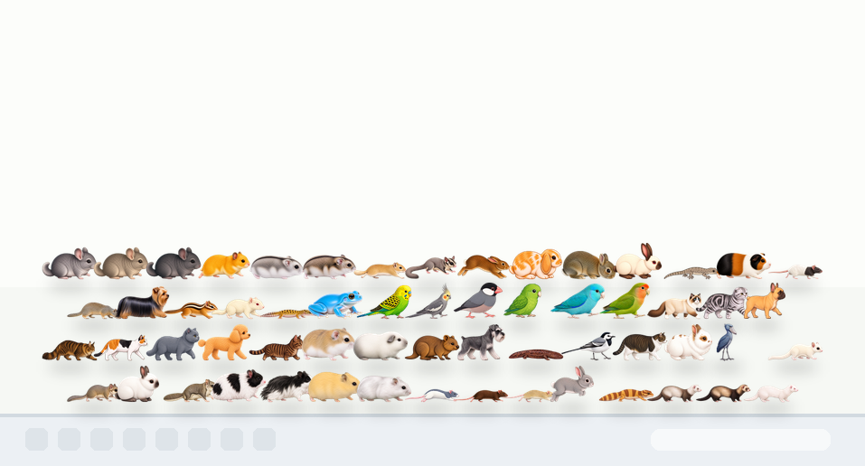
41種類の小動物と基本的な動きを試せる先行お試し版です。
これからも、見た目と動きが整った動物から順番に追加していきます。
登場する動物
現在選べる動物は以下の41種類です。今回追加した鳥、猫、犬、爬虫類、小動物も選べます。
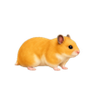
ハムスター
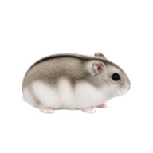
ジャンガリアンハムスター
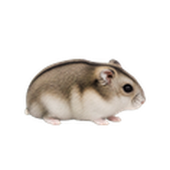
キャンベルハムスター
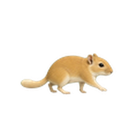
マカロニマウス
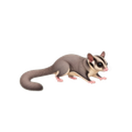
モモンガ
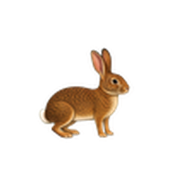
うさぎ
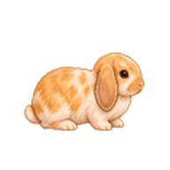
ホーランドロップ
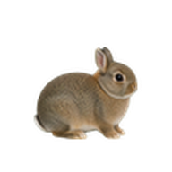
ネザーランドドワーフ
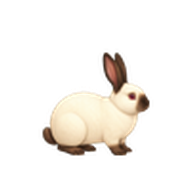
ヒマラヤンうさぎ
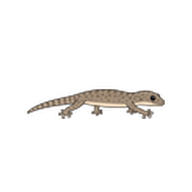
ヤモリ
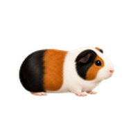
モルモット
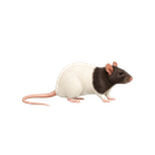
ファンシーラット
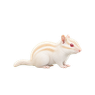
黒目の白いホワイトシマリス
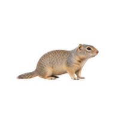
リチャードソンジリス
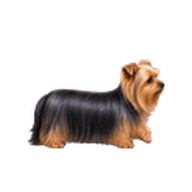
ヨークシャーテリア
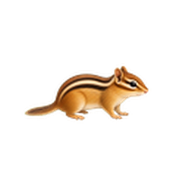
シマリス
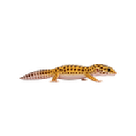
ヒョウモントカゲモドキ
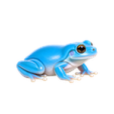
水色イエアメガエル
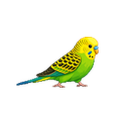
セキセイインコ
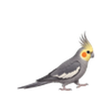
オカメインコ
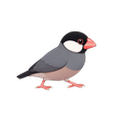
文鳥
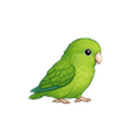
マメルリハ
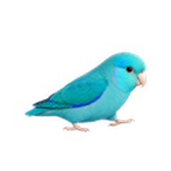
マメルリハ（青緑）
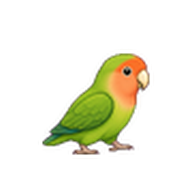
コザクラインコ
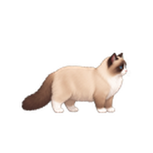
ラグドール
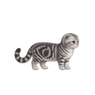
スコティッシュフォールド
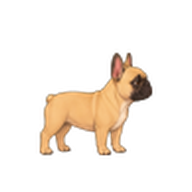
フレンチブルドッグ
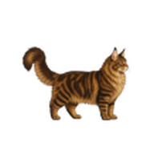
メインクーン
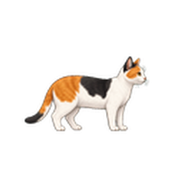
三毛猫
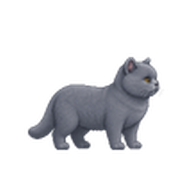
ブリティッシュショートヘア
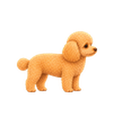
トイプードル
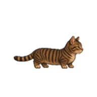
マンチカン
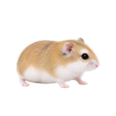
ロボロフスキー
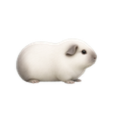
モルモット（ロシアンスモーク白）
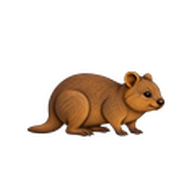
クアッカワラビー
真のアルビノシマリス
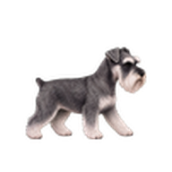
ミニチュアシュナウザー
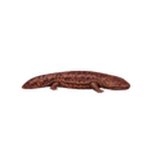
オオサンショウウオ
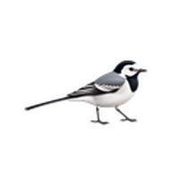
ハクセキレイ
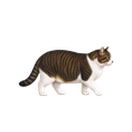
キジ白猫
これから追加予定
現在の追加予定は、Pagesに残っている候補12件、白いライオンヘッド模様のライオンラビット、あまり動かない低モーション特別扱いのハシビロコウです。
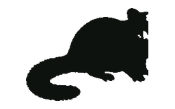
リューシスティックモモンガ
アフリカヤマネ
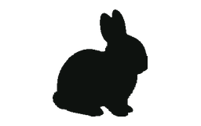
ネザーランドドワーフ（ヒマラヤン）
アメリカモモンガ
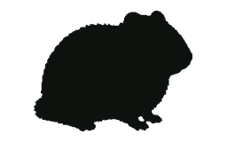
白黒長毛ハムスター
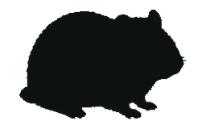
イエロージャンガリアン
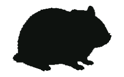
パールホワイトジャンガリアン
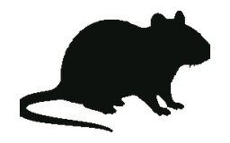
ファンシーラット（ブルーフーディッド）
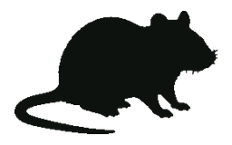
ファンシーラット（チョコレートセルフ）
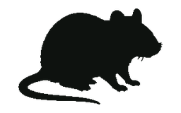
ファンシーラット（クリームアグーチ）
グレーうさぎ
ライオンラビット
ニシアフリカトカゲモドキ
ハシビロコウ
できること
タスクバーやDock付近でお散歩
Windowsではタスクバー付近、MacではDock付近に小動物を表示します。
表示数とサイズ変更
設定から最大10匹までの表示数と、1匹ごとのサイズを変えられます。
表示位置の調整
Windows版では表示する画面、歩き回る範囲、縦位置を調整できます。Mac版では表示先ディスプレイを選べます。
クリック反応
動物をクリックすると小さな反応をします。作業中のクリック操作をできるだけ妨げません。
シンプルな表示
現行プレビューでは木、種、餌などの追加アイテムは表示せず、動物本体のしぐさを中心に楽しめます。
Windows / Mac対応
Windows版 v0.2.5 とMac版 v0.2.5 をこのページから入手できます。
更新内容
公開中の主な変更点です。Windows版とMac版は現在 v0.2.5 です。
v0.2.5 / 2026-06-30
青緑マメルリハ、真のアルビノシマリス、ミニチュアシュナウザー、オオサンショウウオ、ハクセキレイ、キジ白猫を追加し、選べる動物を41種類に増やしました。既存のインコ、クアッカ、ロボロフスキー、猫・犬アセットも見直し、ヒョウモントカゲモドキのターン中のサイズを補正しています。Windowsのmixed-DPIマルチモニター表示も修正しました。
v0.2.4 / 2026-06-28
19種類の動物を追加し、選べる動物を35種類に増やしました。シマリス、ヒョウモントカゲモドキ、水色イエアメガエル、鳥類、猫種、犬種、ロボロフスキー、ロシアンスモーク白のモルモット、クアッカワラビーを追加しています。
v0.2.3 / 2026-06-28
Windows版の設定UIで、名前変更ダイアログと設定フッターのボタンが見切れないようにした修正版です。動物数は16種類のままです。
v0.2.2 / 2026-06-27
Mac版にWindows版と同じ16種類の動物選択、1匹ごとのサイズ変更、表示数、言語切り替え、表示先ディスプレイ設定を反映しました。Windows版にはトレイの Language メニューを追加しました。PagesもJP/EN切り替えと動物グリッド表示に更新しています。
v0.2.1 / 2026-06-27
Windows版のセキュリティと信頼性を整え、Mac版のZIPも v0.2.1 として公開した更新です。Windows用のバージョン情報、アプリアイコン、更新処理、SHA256検証情報を追加しました。動物数は16種類のままです。
v0.1.5 / 2026-06-21
16種類の小動物を先行公開したプレビュー版です。Windows版とMac版で、歩き、待機、クリック反応、表示数変更を試せます。
この版について
v0.2.5 は、41種類の小動物を試せるWindows / Macプレビュー版です。 今回追加した動物も、動物選択、サイズ変更、表示数、言語、表示先ディスプレイ設定で選べます。Windows版はmixed-DPIマルチモニター表示も修正しています。 Windows版はトレイから Language を切り替えられます。 今後も、Pagesに残っている候補、白いライオンヘッド模様のライオンラビット、低モーション特別扱いのハシビロコウを順番に進めます。 木、種、餌などの追加アイテムはこの版では表示しません。